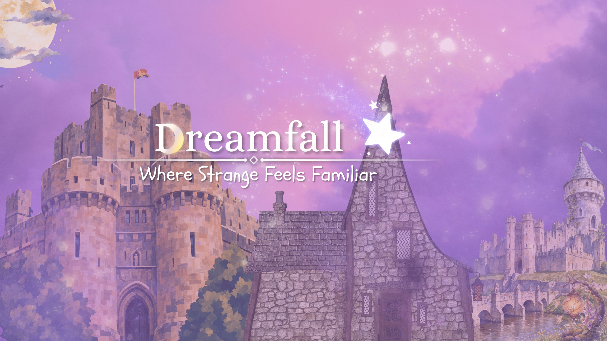

In Dreamfall... There will be many to choose from and from different catagories. You can also combine race options to make a new one. From there you will be taken to a character customization menu where you will have in debth options to change your features. You will be able to change everything from eye color to how long your nails are. If you choose a quadraped race or a race with fur, scales or just multicolor skin, you will be able to customize its color, pattern textureand so forth.
This game is based on several things like The series Dungeon Crawler by Matt Dinniman
also, Alice in WonderlandSpecifically, the live action tim burton films.
I'm still trying to decide if I will create this game using the Unity platform

Hello, I'm Autumn
As of 2026 I'm enrolled in college at Chattanooga State Community College.
Creating this game has been a dream of mine for a very long time. Reading Dungeon Crawler Carl made me realize that I would like it to be a dungeon crawler game.